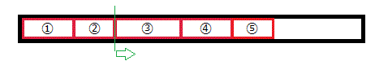
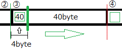
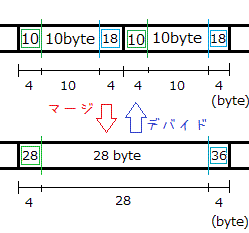
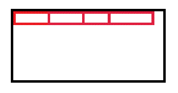
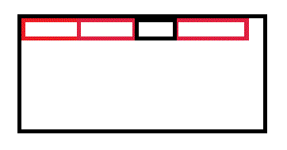
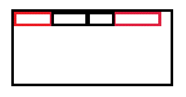
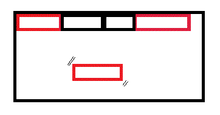

メモリアロケーター
・メモリの確保
プログラムでいういわゆる「メモリの確保」のことを英語で「アロケート」(割り当て)といいます。
メモリを確保するときはC言語ならmalloc、C++ならnewを用いるのが一般的ですね。
しかし、標準で実装されているnew系統は様々な用途のために一般化・安全化されていて、少し遅いです。
普通に使う分には気にならない程の遅延ですが、短時間に多くのnew-deleteが行われる、
例えばゲームではメッセージ処理のためには実行ループ全体の処理を1/60s=16.66ms以下に抑える必要があります。
その多くは描画に使われますが、内部処理のnewでも結構時間を喰います。(特に制御すべき物体が多い場合)
そこでそのような高速で行われるメモリ確保を実現すべく、TLSFメモリアロケータ(TLSF:Two-Level Segregate Fit)という機構を実装していきたいと思います。
アロケータにはその実装形態により、長所と短所が決まります。
ある程度万能な用途に使えるようにしたもの、安全性に特化したもの、メモリ容量の節約に特化したもの、いろいろあります。
一般のnew・mallocはバランスがとれた万能用途だと言えます。
そのなかでTLSFメモリアロケータは速度に特化したアロケータです。
指針として時間がかかるforループとifは極力使わず、代わりに高速なbit演算をメインに使って組みますが、
実装の前に下準備が必要なのでその解説から入ります。
・ステップ
TLSFメモリアロケータを創るのはなかなかに大変で、
いくつものステップを踏んで、順に創っていきます。
- BoundaryTag アルゴリズムの理論 ←ここで解説する内容
- BoundaryTag アルゴリズムの実装 ←すぐ実装編をみたい方はこちら
- TLSFメモリアロケータの理論
- TLSFメモリアロケータの実装
それぞれ難しいので かなり長くなります。
じっくりと考えていきましょう。
まず説明するのはBoundaryTag アルゴリズムです。
TLSFメモリアロケータに限らず、アロケータは一番初めに一塊の大きなメモリを(newで)確保して、
外部からのメモリ要求に対して、順次切り出して貸し出します。
先に、無事そのメモリを切り出すことができたとして、その個々の振る舞いを考えてみましょう。
今、大きな黒枠のメモリから以下の赤枠のようにメモリを切り出したとします。

メモリ帯は線形に連続していると仮定します。
②と③の境界から見て、③のメモリブロックのサイズを知るためにはどのような情報が必要でしょうか。
②と③の境界から辿って③と④の境界を検出して差分で出す？ いえいえそんな面倒なことはしたくありません。
メモリの大きさがわからないので下手したら検出にかなり時間がかかります。指針からforもあまり使いたくありません。
そこでメモリを切り出すときに③の先頭に③のサイズを書き込んでおきます。
そうすれば境界に立ちながら③のサイズを取得できます。
③の保持メモリサイズが40byteだとすると、サイズを書き込むスペースが4byte(unsigned int)分増えて全部で44byte確保する必要があります。
というわけで各メモリブロックの先頭にタグをつけるようにします。

こうすると、②と③の境界から③のサイズを取得して、そのままそのサイズ分ジャンプすれば③と④の境界までいけます。
これを繰り返すことで順方向へは自由にポンポンとジャンプして参照することができます。
・
・
・
では逆方向へはどういけばいいでしょうか。
同じようにメモリブロックの末尾に終端タグを入れればうまくいきそうです。
ただし書き込むサイズは先頭タグ分も含めたサイズです。
当然終端タグ分もメモリは増えますのでさらに4byte(unsigned int)分増えて全部で48byte確保することになります。

これでこうすると、③と④の境界から先頭タグ分も含めた③のサイズを取得して、そのサイズ分ジャンプすれば②と③の境界までいけます。
これを同じように繰り返すことで逆方向へも自由にポンポンとジャンプして参照することができます。
終端タグを入れた影響で、順方向へたどるときは （先頭タグに書かれているサイズ分）＋（終端タグそのもののサイズ4byte(unsigned int)） だけジャンプすることになります。
後者は定数なので問題ありません。
なぜこのようにしたかと言うと、先頭タグは管理しているメモリサイズそのもの、終端タグは占有している全体のメモリサイズをそれぞれ表すようにしたかったからです。
このように前後のメモリブロックへポンポンと自由にアクセスできるような機構をBoundaryTag アルゴリズムといいます。
この機構の強みとして、隣同士の領域の統合（マージ）・ある領域の分割（デバイド）が容易な点にあります。

領域自体は線形に繋がっていると仮定しているので、先頭タグと終端タグの値の書き換えだけで実現できます。
この性質は今回用いる高速アロケータを実現するにあたって大きな武器となります。
実際はこれらを踏まえてクラス化するので、先頭タグ部分は単純なunsigned intではなく、その管理クラス分の大きさを確保します。
では、実際に実装していきましょう。
今回はTLSFアロケータに用いるために少し特化させますので余分なものがくっつきますが本質は変わりません。
（BoundaryTagだけクラス化してそこからTLSF用に継承してもいいですがめんどうなので（＾＾； ）
今回創るBoundaryTagBlockクラスは↑の理論編を考慮して次のメンバを持ちます。
- 運用メモリのサイズを表す unsigned int size
- 運用メモリの確保、アクセス用 unsigned char ポインタ p
- 終端タグアクセス用 unsigned int ポインタ c
先頭タグはクラス作成時のthisを当てはめます。
実際には先頭タグの部分にBoundaryTagBlockクラスの実体があることになるので、thisが先頭となります。

さらにTLSF用に特化させるために
- その確保されたメモリが使用中がどうかを表すフラグ bool flag
同じFLI,SLIを持つフリーブロックとしてまとめるために(後述)
- 双方向リストを形成する BoundaryTagBlock ポインタ prevとnext
次にメンバ関数ですが、流儀の問題でカプセル化はガン無視して外部から操作しまくりますので全てpublicです。
- デフォルトコンストラクタ
- 運用メモリ先頭のポインタ(メンバとしてのp)とデータサイズを受け取るコンストラクタ
- デストラクタ
- 運用データサイズを取得するunsigned int GetDataSize()
- 自身が占有する全てのデータサイズを取得するunsigned int GetAllSize()
- 双方向リストへ入れるBoundaryTagBlock* Regist(BoundaryTagBlock* nbp)
- 双方向リストから抜けるBoundaryTagBlock* Remove();
メンバ関数に関しては難しいものはありません。全て説明の通りです。
運用データサイズは即ちunsigned int sizeの参照用ですし、占有する全てのデータサイズもunsigned int ポインタ cを通して取得可能です。
双方向リストに関しても一般的なものと変わりません。
（そろそろ型の名前を打つのが面倒になってきたので（実際はコピペしてますが）
typedef unsigned int uint;
typedef unsigned long ulong;
typedef unsigned char byte;
typedef BoundaryTagBlock BBlock;
typedef TLSFMemoryAllocator TLSF;
・・・とさせてください）
以上よりコードは次のようになります。実装と合わせてごらんください
//BoundaryTagBlock.h
//Boundary Tag
//[先頭タグ][データ部][終端タグ]
class BoundaryTagBlock{
public:
//データマップ
//[this](sizeof(BoundaryTagBlock))[p](size)[c](sizeof(uint))
bool flag; //使用フラグ
uint size; //データ部サイズ
byte* p; //データ部への先頭ポインタ
uint* c; //endTagへのポインタ
BoundaryTagBlock *prev,*next;//BoundaryTagBlockの双方向リスト
//コンストラクタ
BoundaryTagBlock();
BoundaryTagBlock(byte* dataP,uint size);
//デストラクタ
~BoundaryTagBlock();
//運用データサイズを取得
uint GetDataSize();
//自身が占有する全てのデータサイズを取得
uint GetAllSize();
//双方向リストへ入れる
BoundaryTagBlock* Regist(BoundaryTagBlock* nbp);
//双方向リストを抜ける
BoundaryTagBlock* Remove();
};
typedef BoundaryTagBlock BBlock;
//BoundaryTagBlock.h
#include "main.h"
//コンストラクタ
BoundaryTagBlock::BoundaryTagBlock():
flag(false),size(0),p(NULL),c(NULL){
prev=next=this;//初期化
}
BoundaryTagBlock::BoundaryTagBlock(byte* dataP,uint size):
flag(false),p(dataP){
prev=next=this; //初期化
this->size=size;//運用メモリサイズ
if(p!=NULL){
//cはpからsizeだけ後方にある終端タグを指す
c=(uint*)(dataP+size);
*c=sizeof(BoundaryTagBlock)+size+sizeof(uint);//占有する全メモリ
}
else{c=NULL;}
}
//デストラクタ
BoundaryTagBlock::~BoundaryTagBlock(){}
//運用データサイズを取得
uint BoundaryTagBlock::GetDataSize(){
return size;
}
//自身が占有する全てのデータサイズを取得
uint BoundaryTagBlock::GetAllSize(){
return *c;
}
//双方向リストへ入れる
BoundaryTagBlock* BoundaryTagBlock::Regist(BoundaryTagBlock* nbp){
//呼び出し元は常にダミーリストの先頭ブロック
nbp->next=next;
nbp->prev=this;
nbp->prev->next=nbp->next->prev=nbp;
return this;
}
//双方向リストを抜ける
BoundaryTagBlock* BoundaryTagBlock::Remove(){
prev->next=next;
next->prev=prev;
prev=next=this;
return this;
}
コード載せて丸投げしといてなんですけどとりあえずBoundaryTagBlockについての理論と実装はこんな感じです。
双方向リストの運用については次のTLSF編で説明します。
すぐに次へ進む->TLSFメモリアロケータ（理論編）
BoundaryTagBlockを用いる有用性

メモリアロケータは最初に一括で大きなメモリブロック塊を確保します。newはこの時にしか使用しません。
そして要求されるメモリサイズに対してメモリブロックを切り出して分け与えます。
ここで要求されるメモリサイズに対して切り出すメモリブロックのサイズが求まったとして、そのサイズを元にこのメモリブロック上にBBlockを作成します。
このとき、newを使いますが新しくメモリを確保したりはしません。placement newを使って指定されたポインタに作成します。
placement newは指定されたポインタ上にインスタンスを確保する命令文です。

上図の赤枠それぞれがBBlockだと思ってください。
運用メモリブロックは切り出して（外部に）分け与えていますので「使用中」です。よってflagはtrueです
今、このうちひとつが「解放」されて不要になったとします。つまりflagをfalseにすると こうです。

もうひとつ「解放」してみましょう

さて、このあとにまたメモリが欲しくなったとして下図のようなサイズのメモリ要求がきたとするとどこにBBlockを作成すればいいでしょうか。

右端に新たに作りましょうか、いえいえそんなことをするとあっという間に全体のメモリ限界がきてしまいます。
ここは「解放」されて不要になった領域をマージして空きを増やして新しいメモリ要求を受け入れましょう。

「解放」されて不要になった領域はどういじくりまわしても外部に影響はないので、
小さな空き領域をマージして大きくして運用しましょう。
大きすぎた場合はちょうど良いくらいまで分割もできます。
お気づきでしょうか、この一連の操作を構成する要素は
- 一塊のメモリブロックからの切りだし（分割）
- 隣接した不要ブロックのマージ（統合）
サイズ管理も含めてBoundaryTag アルゴリズムの特性そのままです。
隣接した不要ブロックのマージを常に行うと「未使用」領域は2つ以上隣接して存在することはないということも重要な性質です。
（つまり本当は上の図で二つめの領域を「解放」した時点で既に「不要」領域はマージされている）
これでとりあえず前提となるBoundaryTag アルゴリズムの解説は終わりです。
以上を踏まえて、次のページからメインのTLSFメモリアロケータについて考えていきましょう
->TLSFメモリアロケータ（理論編）へ